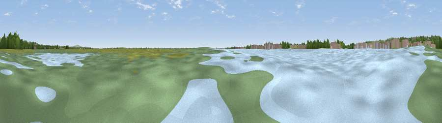

Viewpoint near Langstone
#39922 in England · top 76% of its area beats it · near Langstone · access?Where it is
The exact computed spot (SU 71837 04440). Click the marker for map links.
Public access: no public right of way or access land is recorded at this exact spot — it may be on private land. Computed from Natural England's CRoW access layer and OpenStreetMap rights of way — not the legal definitive map. Always verify locally.
The view, rendered

A 360° render of this exact spot computed from the terrain model, tree cover and land cover — summer colours, afternoon light, calibrated against photographs of famous viewpoints. Real trees, hedges and buildings will differ in detail.
The panorama
Grey silhouette: terrain skyline in each direction (720 bearings, Earth curvature and refraction included). Dashed green: skyline with trees (+15 m) and buildings (+8 m) as obstacles. Blue strip: how far the ground is visible on each bearing.
Where the view opens
Wedge length = distance to the farthest visible ground on that bearing (vegetation-aware). Rings at 10, 25 and 50 km.
What fills the view
68% water · 12% grassland · 9% built-up · 8% woodland · 2% cropland · 2% wetland
Angular shares of the visible panorama (visual magnitude), not map area. Landscape diversity 0.47 (0–1 Shannon).
Key numbers
More beautiful places nearby
The staircase of upgrades: each row has a higher view potential than everything closer. Driving times are estimates from straight-line distance, calibrated against real road routing — check an actual route before setting out.
| Place | Direction | Drive | Score |
|---|---|---|---|
| Viewpoint near Purbrook | WNW · 4 km | ~9 min | 69.9 |
| Viewpoint near Purbrook | WNW · 4 km | ~10 min | 73.6 |
| Viewpoint near Purbrook | WNW · 7 km | ~14 min | 75.4 |
| Viewpoint near Southwick | WNW · 8 km | ~16 min | 76.6 |
| Viewpoint near Stoughton | ENE · 12 km | ~23 min | 79.5 |
| Viewpoint near Buriton | N · 16 km | ~28 min | 80.0 |
| Beacon Hill | NNE · 17 km | ~29 min | 85.8 |
| Viewpoint near Upper Bonchurch | SSW · 29 km | ~46 min | 86.4 |
50.83504, -0.98124 · source: osm viewpoint · position refined by local search. Computed location — check access rights before visiting.